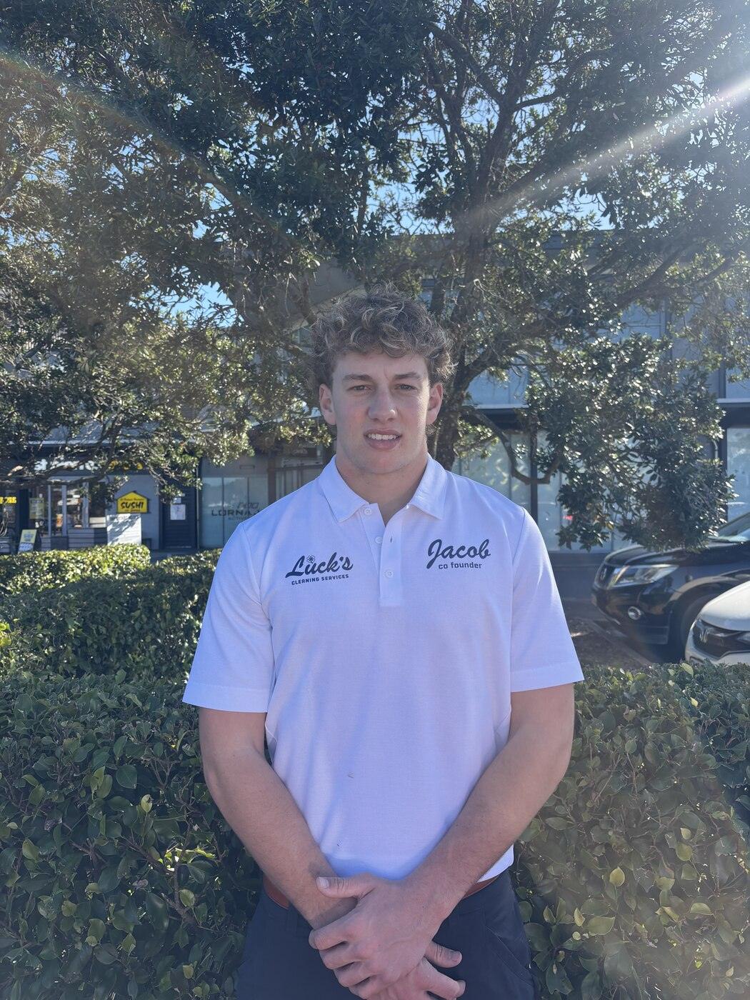
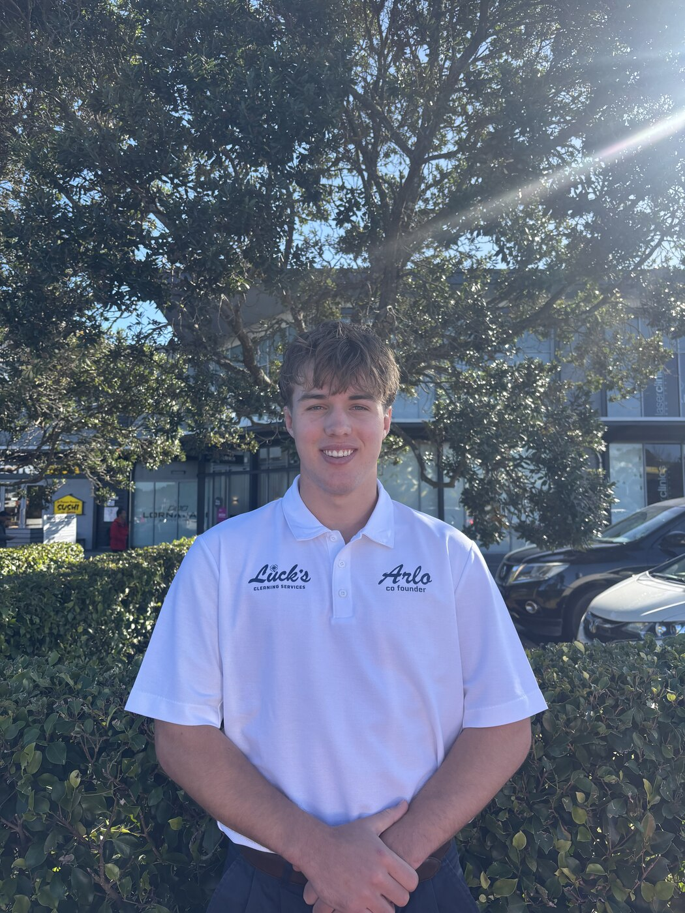

Two founders, one high standard.
Luck's Cleaning Services started with a simple bet: that a young, hands-on team could out-hustle and out-care the big players in window cleaning and exterior washing.
Meet the founders.
Two co-founders, hands-on on every job — from the first quote to the final squeegee pass.

Jacob
Jacob is the first out of the two founders. He's 18 years old and handles quoting, schedules and ensuring all jobs are done to the Luck's standard. He's the window specialist in both commercial and residential, making sure no mark, line or streak is left behind.

Arlo
Arlo is the second founder. He's 19 years old and handles all the books, gear and staff. He specialises in concrete cleaning and exterior house washing with an eye for perfection, helping keep our 100% 5-star rating.
200+ followers across our socials.
See more of our work and behind-the-scenes clips on Instagram, Facebook and YouTube.
What our customers are saying.
Straight from Google — real feedback from real jobs.
Built on the North Shore, one storefront at a time.
Luck's Cleaning Services was founded by Jacob and Arlo with a straightforward goal — do quality window, house and driveway cleaning work, show up when we say we will, and never cut corners on the finish.
We started with storefronts and shopfronts across the North Shore, learning that the difference between an average clean and a great one comes down to patience with the details: sills wiped, tracks cleared, edges checked twice. That same standard now carries across every residential and commercial job we take on.
We're still a small, local operation — which means when you call, you're talking to one of the people who'll actually be doing the work.
The standard behind every job.
Reliability
We turn up on time and finish what we start — no vague windows, no chasing us for updates.
Respect for Property
Careful ladder and pole placement, tidy setup and pack-down, and a genuine effort to leave things better than we found them.
Attention to Detail
Streak-free glass, cleared tracks and sills, edges checked — the finishing touches most cleaners skip.
Straight Talk
Clear, fair quotes and honest communication — no surprise add-ons once the job's underway.